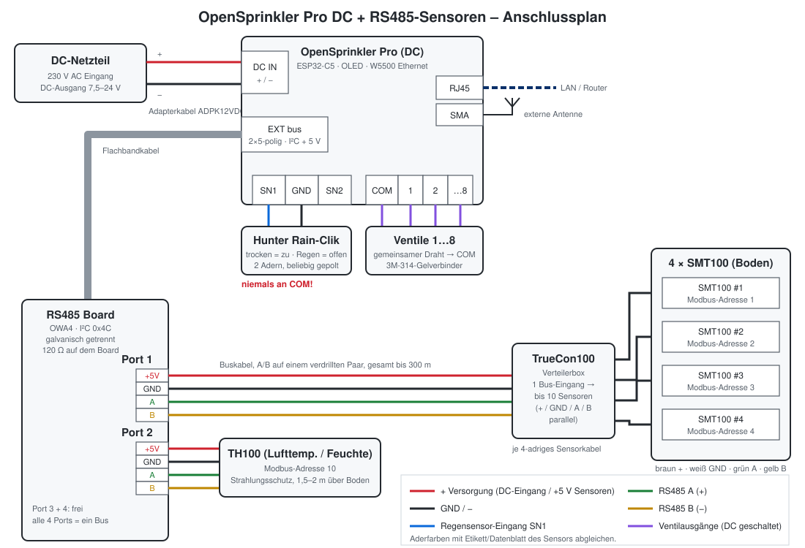
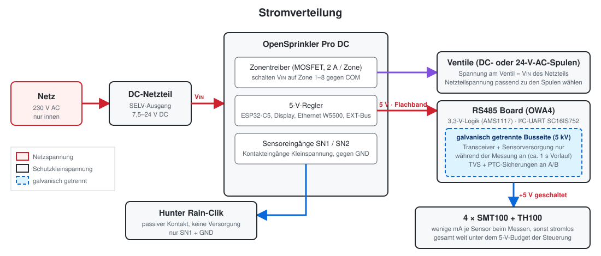

OpenSprinkler Pro mit RS485-Sensoren – Zusammenbau- und Anwenderanleitung
Diese Anleitung beschreibt einen kompletten Profi-Aufbau: OpenSprinkler Pro (DC, Ethernet) mit dem OpenSprinkler RS485 Board, Truebner SMT100 Bodenfeuchtesensoren, einem Truebner TH100 Lufttemperatur-/Feuchtesensor, der Verteilerbox TrueCon100 und dem Regensensor Hunter Rain-Clik.
Verwandte Seiten: Analog Sensor Konfiguration, Sensor-Automation und Monitore, OpenSprinkler Pro.
Kurzreferenz (PDF, 2 Seiten)
Kurzreferenz herunterladen (Deutsch) · Quick reference (English)
1. Komponenten
| Anz. | Komponente | Zweck |
|---|---|---|
| 1 | OpenSprinkler Pro, Variante DC, Ethernet + externe Antenne | Steuerung, 8 Zonen, Sensoreingänge SN1/SN2, Erweiterungsbus EXT |
| 1 | DC-Netzteil + Adapterkabel 7,5–12 V DC (ADPK12VDC) | Versorgung von Steuerung und Ventilen |
| 1–2 | OpenSprinkler RS485 Board (Truebner RS485 Adapter) | I²C → RS485/Modbus RTU, 4 Klemmenblöcke |
| 4 | Truebner SMT100 (RS485 Modbus) | Bodenfeuchte, Bodentemperatur, Permittivität |
| 1 | Truebner TH100 (RS485 Modbus) | Lufttemperatur und relative Luftfeuchte |
| 1 | Truebner TrueCon100 (RS485) | Verteilerbox im Feld, bis 10 Sensoren an einem Buskabel |
| 1 | Hunter Rain-Clik | Regenschalter an SN1 |
| 2+2 | Hutschienenhalter V4 | Hutschienenmontage von Pro und RS485 Board |
| 20 | 3M-314-Gelverbinder | Wasserdichte Ventilverdrahtung in der Ventilbox |
Nur ein RS485 Board pro Steuerung
Das RS485 Board hat die feste I²C-Adresse 0x4C. Die Firmware bedient ein Board pro
Steuerung. Ein zweites Board an derselben Steuerung wird nicht erkannt und kann den I²C-Bus
stören. Alle vier Klemmenblöcke eines Boards sind derselbe Bus und versorgen zusammen bis zu
64 Sensoren; vier SMT100 und der TH100 passen also an ein Board. Ein zweites Board aus dem Set
bitte als Ersatz aufbewahren oder an einer zweiten Steuerung verwenden.
2. Anschlussplan

3. Stromplan

- Die Steuerung wird mit Gleichspannung (7,5–24 V) aus dem Netzteil versorgt. Dieselbe Spannung wird auf die Zonenausgänge geschaltet; die Netzteilspannung daher passend zu den Ventilspulen wählen (die DC-Variante schaltet auch normale 24-V-AC-Ventile).
- Das RS485 Board bezieht 5 V und I²C über das Flachbandkabel vom Erweiterungsbus EXT. Es braucht kein eigenes Netzteil.
- Die Busseite des RS485 Boards ist galvanisch getrennt. Die Sensorversorgung (+5 V an den Klemmen) wird nur während einer Messung eingeschaltet (ca. 1 s Vorlauf); zwischen den Messungen verbrauchen die Sensoren praktisch keinen Strom.
- Der Rain-Clik ist ein passiver Kontakt und braucht nur SN1 + GND.
4. Zusammenbau
- Montage. Je zwei Hutschienenhalter V4 an OpenSprinkler Pro und RS485 Board schrauben und beide auf die Hutschiene clipsen. Platz für Flachbandkabel und Kabelverschraubungen lassen.
- Flachbandkabel. Im stromlosen Zustand das RS485 Board mit dem EXT-Anschluss des Pro verbinden. Ausrichtung prüfen (Pin 1 / rote Ader auf beiden Seiten gleich).
- Ethernet und Antenne. Netzwerkkabel einstecken. Externe Antenne auf die SMA-Buchse schrauben; sie wird für WLAN/BLE/Zigbee auch bei aktivem Ethernet genutzt.
- Ventile. Den gemeinsamen Draht aller Ventile an COM, den zweiten Draht jedes Ventils an Zone 1 … 8. In der Ventilbox mit den 3M-314-Gelverbindern verbinden (nicht abisolieren, Drähte ganz einschieben, Kappe mit der Zange eindrücken).
- Rain-Clik. Beide Adern an SN1 und GND. Niemals an COM anschließen.
- Buskabel. Von Port 1 des RS485 Boards ein Kabel mit einem verdrillten Paar für A/B und zwei Adern für +5 V und GND (z. B. LiYCY 2×2×0,5 mm² oder Outdoor-CAT-Kabel) zur TrueCon100 führen. Gesamtlänge pro Bus bis 300 m. Im Leerrohr verlegen, nicht parallel zu Netzleitungen.
- TrueCon100. Ankommendes Buskabel an die Eingangsklemmen, jeden SMT100 an einen Ausgang (+ / GND / A / B, alle parallel). Box dicht verschließen.
- TH100. Direkt an Port 2 des RS485 Boards anschließen (oder an einen freien Ausgang der TrueCon100). Schattig, 1,5–2 m über dem Boden, im Strahlungsschutzgehäuse montieren.
- SMT100 einbauen. Senkrecht oder waagerecht in ungestörten Boden im Wurzelbereich stecken (typisch 10–20 cm tief), voller Bodenkontakt, keine Lufteinschlüsse. Nicht direkt neben einen Tropfer setzen.
Aderfarben SMT100 / TH100 (Truebner): braun = + Versorgung, weiß = GND, grün = RS485 A, gelb = RS485 B. Immer mit Etikett bzw. Datenblatt der eigenen Charge abgleichen. Antwortet ein Sensor nicht, als ersten Test A und B tauschen.
Busabschluss
Auf dem RS485 Board ist bereits ein 120-Ω-Abschlusswiderstand bestückt. Bei kurzen Leitungen (< 50 m) ist nichts weiter nötig. Bei langen Leitungen am fernen Ende (in der TrueCon100) zusätzlich 120 Ω zwischen A und B setzen.
5. Inbetriebnahme
- Netzteil einschalten. Das OLED zeigt die IP-Adresse (Ethernet).
- Weboberfläche oder OpenSprinklerASB-App öffnen und anmelden. Falls angeboten, die Firmware per Online-Update aktualisieren.
- Regensensor: Optionen bearbeiten → Sensoren → Sensor 1 Typ = Regen, Offen (Normally Open) = aus (der Rain-Clik ist trocken geschlossen). Mit der Testtaste am Rain-Clik prüfen (≥ 30 s gedrückt halten).
- RS485 Board prüfen: Nach dem Anlegen des ersten RS485-Sensors darf die Sensordiagnose
kein RS485-Adapter (
RS485_NO_ADAPTER) nicht melden. Sonst das Flachbandkabel prüfen.
5.1 Modbus-Adressen vergeben (immer nur ein Sensor)
Neue Truebner-Sensoren haben meist die Modbus-Adresse 1. Jeder Sensor am Bus braucht eine eigene Adresse. Empfohlene Belegung:
| Sensor | Modbus-Adresse |
|---|---|
| SMT100 #1 … #4 | 1, 2, 3, 4 |
| TH100 | 10 |
- Nur einen Sensor an den Bus anschließen (die übrigen an der TrueCon100 abklemmen).
- In der Analog Sensor Konfiguration einen Sensor vom Typ Truebner SMT100 RS485 Modbus, moisture mode anlegen (TH100: Truebner TH100 RS485 Modbus, humidity mode).
- Neue Adresse in Modbus-ID eintragen und Legen Sie die SMT100-Modbus-ID fest (Set SMT100 Modbus ID) drücken, bestätigen.
- Sensorkabel mit der Adresse beschriften, nächsten Sensor anschließen, wiederholen.
5.2 Sensoren anlegen
| Name (Beispiel) | Typ | Modbus-ID | Intervall |
|---|---|---|---|
| Beet 1 Feuchte | Truebner SMT100 RS485 Modbus, moisture mode | 1 | 300 s |
| Beet 1 Bodentemp. | Truebner SMT100 RS485 Modbus, temperature mode | 1 | 900 s |
| Beet 2–4 Feuchte | … moisture mode | 2, 3, 4 | 300 s |
| Luftfeuchte | Truebner TH100 RS485 Modbus, humidity mode | 10 | 300 s |
| Lufttemperatur | Truebner TH100 RS485 Modbus, temperature mode | 10 | 300 s |
Protokoll (Log) aktivieren, um Verlaufsdiagramme zu erhalten. Feuchte und Temperatur desselben SMT100 sind zwei Sensoreinträge mit gleicher Modbus-ID. Optional eine Sensorgruppe (Min/Max/Mittelwert) über mehrere Feuchtesensoren anlegen.
6. Sensoren für die Bewässerung nutzen
- Programm-Anpassungen: Feuchtesensor mit einem Programm verknüpfen. Min/Max festlegen: unter Min läuft das Programm mit 100 % (oder mehr), über Max wird es auf 0 % reduziert. Beispiel für sandigen Lehm: Min 15 %, Max 30 % VWC.
- Monitore: z. B. eine Zone bei Feuchte > 35 % stoppen bzw. sperren oder bei Lufttemperatur unter 2 °C (Frost) warnen. Siehe Sensor-Automation.
- Der Rain-Clik arbeitet unabhängig über SN1 und stoppt alle Zonen, bei denen Sensor 1 ignorieren nicht gesetzt ist.
7. Fehlersuche
| Symptom | Prüfen |
|---|---|
| Diagnose: kein RS485-Adapter | Flachbandkabel-Ausrichtung, nur ein RS485 Board angeschlossen, Steuerung neu starten |
| Ein Sensor liefert keinen Wert | A/B vertauscht, Adresse falsch oder doppelt, +5 V/GND an der TrueCon100, Kabellänge |
| Alle Sensoren fallen aus | Kurzschluss im Buskabel, Wasser in der TrueCon100 |
| Unplausible Feuchtewerte | Lufteinschlüsse am Sensor, Sensor in Kies oder direkt am Tropfer |
| Rain-Clik reagiert nicht | SN1-Typ = Regen, Normally Open = aus, Verdrahtung SN1 + GND |
Hardwaredetails und API der RS485-Typen: Analog Sensor Konfiguration.